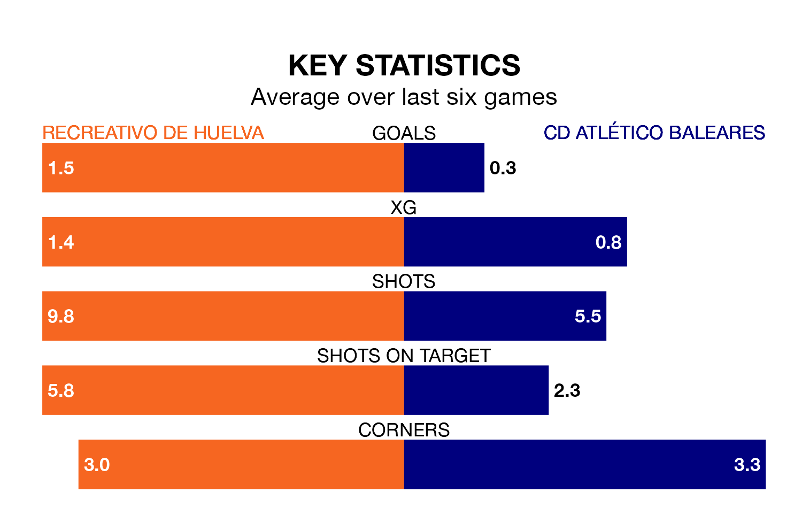

Recreativo de Huelva are heavy favourites to keep all three points at home in Sunday's early kick-off against CD Atlético Baleares.
Recreativo de Huelva, who sit sixth in Primera Division RFEF Group 2 with 30 games played, are priced at 1.4 to seal victory at the Estadio Nuevo Colombino.
Sitting 13 places and 26 points behind them in the table, Atlético Baleares are 9.0 to win with *Betting Company*, while the draw is at 4.4.
Recreativo de Huelva are in mixed form in Primera Division RFEF Group 2, with two wins and two draws from their last six games.
With no wins and a draw over that period, Atlético Baleares's form is much worse – they have taken one point from 18, compared to the home team's eight.
With Rubén Ramos González between the sticks, Recreativo de Huelva can rely on one of the league's safest pair of hands. He has kept 11 clean sheets in his 22 appearances this season, and no 'keeper has prevented the opposition scoring more often in Primera Division RFEF Group 2.
In the visitors' net, Ramón Vila Rovira has five clean sheets in 14 games. He has conceded a goal every 61 minutes, 70% more often than the 104 minutes between goals for Ramos González.
With 16 goals in 30 games so far this season, Atlético Baleares are the league's lowest scorers with 0.5 goals per game. And they are conceding more than average, letting in 49 goals at a rate of 1.6 per game.
Recreativo de Huelva, meanwhile, are average scorers, with 1.1 goals per game. They have conceded 1.0 goal per game.
Recreativo de Huelva's last match was on March 30, a 3-2 loss against CD Castellón, with David Del Pozo Guillén and Luis Alejandro Alcalde Martínez getting the goals for Recreativo de Huelva.
Atlético Baleares lost 1-0 against Real Madrid B last time out, on March 31.
Updated: 16:41 (UTC), 04/04/24